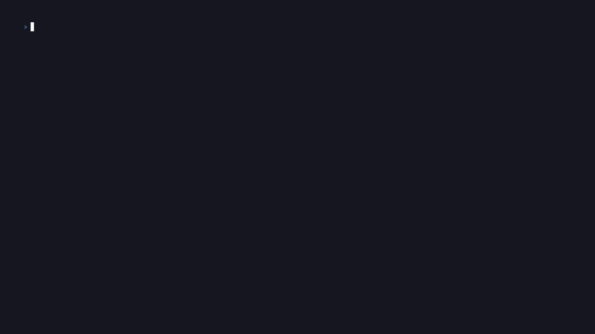

Leon（LeON-Nie-code）的 tmux-workbench 的 zellij 版本
Zellij Workbench 索引你本机以及各台 SSH 服务器上的 zellij 会话， 记住会话周边的项目上下文，并提供一个统一、快速的 CLI/TUI 入口， 帮你随时回到之前的工作现场。

它不会替代 zellij，只是让 zellij 的工作区更容易被找到、查看和恢复——不管是本机还是远程。
扫描本机以及任意数量的 SSH 服务器上的 zellij 会话，每台主机批量为一次 SSH 往返——而不是每个会话一次。
每个工作区都有一个 <server>/<session> ID。从任何一台机器上都能附着回去，或者在它消失后重建。
用 server: status: tag: git: 前缀叠加纯文本搜索，输入即时过滤。
每次扫描都会为每个工作区抓取分支、提交、脏状态、领先/落后计数和远程地址。
给工作区加注释，跨扫描保留这些元数据——即使底层会话已经消失。
把 zellij 自己的"已退出但可恢复"会话当作一等的存在状态来追踪，在 TUI 里显示为 active*。
需要 zellij、git，远程服务器还需要 ssh。
安装并初始化配置。
curl -fsSL https://raw.githubusercontent.com/ileadall42/zellij-workbench/main/install.sh | bash
zw init添加一台远程服务器（复用你已有的 ~/.ssh/config）。
zw add-server prod --ssh "ssh prod"扫描，然后在 TUI 里浏览。
zw scan
zw或者直接用 ID 从 CLI 附着。
zw attach prod/apiTUI 自己的状态栏里会实时展示这些快捷键，这里只是给你一份参考，不需要死记硬背。
| Enter | 附着到选中的工作区 |
| / | 搜索——支持 server: status: tag: git: |
| n | 用 $EDITOR 编辑备注 |
| a | 归档 / 取消归档 |
| v | 在 全部 / 活跃 / 已归档 视图间切换 |
| s | 切换服务器过滤 |
| r | 重新扫描（也会每 30 秒自动后台刷新） |
| j / k | 上下移动 |
| q | 退出 |